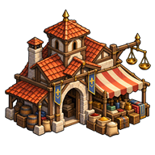
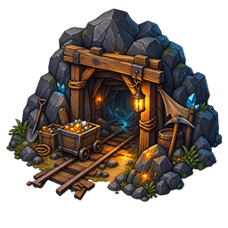

Règles prévues : interlocuteurs selon le lieu, fermeture et taxation du commerce, corruption et marchés noirs privés.
Comprendre ce que cela implique
Le type du lieu et ses améliorations déterminent les interlocuteurs et les services. Le commerce limité du chef, le commerce d’un comptoir et la gestion du propriétaire sont des interactions distinctes.
Une fermeture ou une taxe commerciale permettrait de tenter une corruption avec un PNJ de l’inventaire, de l’or et un objet offert. Le chef du lieu devra toujours coûter plus cher à corrompre qu’un responsable d’amélioration.
Les ventes officielles alimenteraient les impôts par leur taxe ; les ventes clandestines alimenteraient une cagnotte secrète du village. Le corrupteur pourrait partager son marché et percevoir un impôt secret distinct. Les coefficients, les plafonds et les modalités encore indéfinis sont explicitement recensés.



Dans cet article
Détails de référence
Texte de référence mis en forme et conservé dans l’historique de cet article. Les paragraphes datés peuvent décrire une évolution ou une étape antérieure.
Les interactions proposées dépendent du type de lieu et de ses améliorations. Le propriétaire peut fermer ou taxer le commerce officiel. Un visiteur peut alors tenter de soudoyer un responsable pour installer son propre marché noir.
Statut : règles prévues, non disponibles dans leur ensemble. Le moteur possède déjà des responsables de lieux, un marché, un troc limité auprès de certains chefs et des impôts de production. La politique commerciale, la corruption et les marchés noirs décrits ici restent à implémenter. Aucun barème numérique de corruption n’est fixé par cette spécification.
Interlocuteurs et accès prévus
| Situation | Interaction | Condition ou limite |
|---|---|---|
| Village | Discuter avec le chef du village | Le dialogue donne accès aux affaires du lieu. |
| Comptoir | Commercer | Le service dépend de l’amélioration et de la politique du propriétaire. |
| Mine | Discuter avec le chef des mineurs | Le commerce est proposé au visiteur qui ne possède pas la mine, selon les autorisations. |
| Lieu sans amélioration | Commerce limité dans le dialogue du chef | Ce service ne remplace pas un comptoir complet ; son quota reste à définir. |
| Lieu possédé | Régler l’accès commercial des autres joueurs | Le propriétaire peut leur interdire le commerce ou taxer les ventes. |
| Commerce fermé ou taxé | Option « Soudoyer » auprès du responsable du lieu ou d’une amélioration | Le joueur doit posséder un PNJ dans son inventaire. |
Le chef d’un lieu est toujours plus cher à corrompre qu’un PNJ responsable d’amélioration. Le montant et la manière d’appliquer cet écart restent à définir.
Commerce officiel et impôts
La taxe du propriétaire augmente le prix de vente des ressources proposées par le lieu. Lors d’une vente effective, la part correspondant à la taxe rejoint la production des impôts du lieu. Le propriétaire la récupère lors du prélèvement des impôts ; une simple consultation du prix ne produit aucun revenu.
Cette recette commerciale doit être distinguée du revenu fiscal de production décrit dans Impôts des lieux. Le taux autorisé, les arrondis, le traitement de la vente de ressources par le joueur au lieu et l’articulation avec le plafond fiscal existant ne sont pas encore définis.
Soudoyer un responsable
Dans un lieu où le commerce est fermé ou taxé, le joueur parle au chef du lieu ou au responsable d’une amélioration. La présence d’un PNJ dans son inventaire ouvre l’option « Soudoyer ».
Le score de corruption peut être augmenté par :
le PNJ de l’inventaire choisi pour négocier : espion, roublard, aventurier ou spécialiste adapté au lieu, par exemple un mineur dans une mine ;
une somme en or ;
un objet offert.
La résistance dépend du lieu, du nombre de PNJ d’un autre joueur présents sur place, du PNJ avec lequel la négociation se déroule et du type d’amélioration. Les contributions respectives, le tirage de réussite et les conséquences d’un échec restent à définir. La présence d’un PNJ ne signifie pas encore qu’il est consommé ou installé : ce devenir doit être précisé avant l’implémentation.
Prix et recettes du marché noir
Une corruption réussie installe un marché noir pour le joueur corrupteur. Le prix des ressources dépend de la réussite selon la formule demandée :
prix clandestin = (prix + taxe) × 2 − bonus de réussite
Le bonus se calcule à partir du taux de réussite de la corruption. Sa conversion en or, le prix minimal et les arrondis ne sont pas encore fixés ; aucun exemple chiffré n’est donc présenté comme une règle jouable.
La somme d’une vente clandestine ne rejoint pas les impôts officiels : elle va dans une cagnotte secrète du village. Cette cagnotte et l’impôt secret du corrupteur sont deux comptes distincts. Le bénéficiaire et les modalités de retrait de la cagnotte du village restent à préciser.
Visibilité, ouverture et impôt secret
Par défaut, seul le joueur qui a installé le marché noir peut le voir et y accéder. Il peut ensuite l’ouvrir à d’autres joueurs et taxer les prix pratiqués. Cette taxe constitue un impôt secret récupérable par le joueur corrupteur, distinct des impôts du propriétaire du lieu.
Les modalités d’ouverture, la visibilité accordée aux joueurs autorisés, le taux de cette taxe, son articulation avec la formule du prix et les conditions de sa collecte restent à définir. La durée du marché noir, le nombre de marchés par lieu et leur devenir en cas de changement de propriétaire sont aussi à préciser.
Contraintes de réalisation
Le serveur devra valider la présence, l’interlocuteur, les droits, les possessions, les offres et les fonds avant toute mutation. Il calculera la corruption, les prix et les recettes et conservera les comptes dans les sauvegardes. Les données clandestines devront être filtrées dans les états envoyés aux autres joueurs, pas seulement masquées dans l’interface. Les mêmes commandes s’appliqueront en IRL et sur carte fictive, avec les contrôles de position propres à chaque mode.
Les références vérifiées pour distinguer l’existant du prévu sont les modules location-chief-catalog.js, location-access-policy.js, chief-trade-service.js, market-service.js et location-tax-service.js, ainsi que les tests trade.test.js, market.test.js et location-tax.test.js.